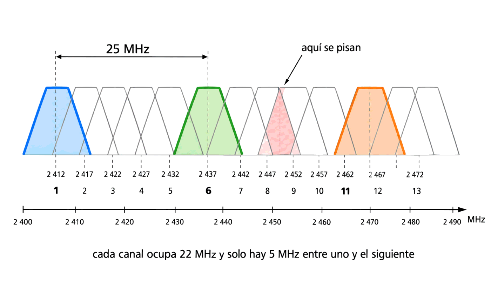
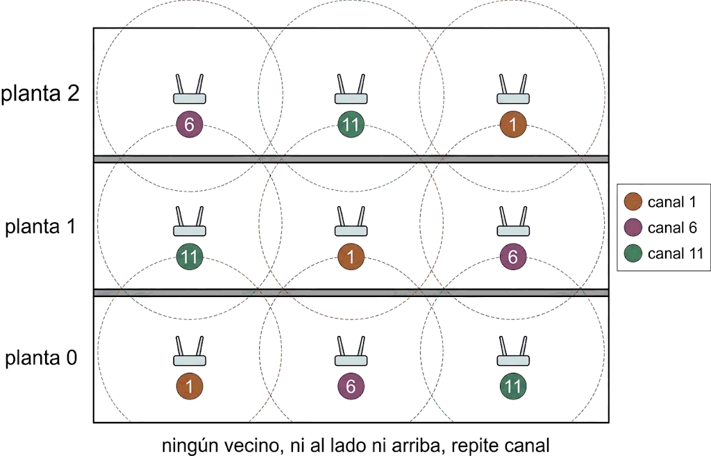

Contenido del día
1. Wi-Fi: microondas en la red local
El libro lo dice en una frase que conviene leer despacio: las redes locales inalámbricas utilizan microondas para transmitir la información. No es una tecnología aparte: es la misma familia de ayer, aplicada a distancias de metros en lugar de kilómetros.
| Radioenlace de ayer | Wi-Fi | |
|---|---|---|
| Banda | 1 a 10 GHz | 2,4 y 5 GHz: dentro de esa misma banda |
| Antena | Parabólica, haz estrecho | Omnidireccional: no hay que apuntar |
| Alcance | Decenas de kilómetros | Metros |
| Licencia | Según la banda | Banda libre, sin licencia ni protección |
| Con quién compartes | Con nadie: el haz va a un punto | Con todos los vecinos |
Una red inalámbrica necesita solo dos cosas, según el currículo Cisco: un punto de acceso y adaptadores de red inalámbricos en los equipos. El punto de acceso hace de puente entre el aire y la red cableada, como viste en el Mes 1.
Las redes inalámbricas siguen el estándar IEEE 802.11. Y la banda: la mayoría opera a 2,4 GHz, aunque las revisiones más recientes permiten transmitir también a 5 GHz, lo que posibilita usar bandas mucho menos saturadas y con mayor ausencia de ruido.
2. Los estándares 802.11
El libro enumera las versiones que existían cuando se escribió:
| Versión | Velocidad según el libro |
|---|---|
| La primera versión | 1,5 Mbps |
| IEEE 802.11b | De 5,5 a 11 Mbps |
| IEEE 802.11g | 54 Mbps |
| IEEE 802.11a | Trabaja en una banda de frecuencia superior, con menos interferencias |
| IEEE 802.11n | «Todavía en borrador», con mayores velocidades esperadas |
| Estándar | Velocidad máxima | Frecuencia | Compatible con |
|---|---|---|---|
| 802.11a | 54 Mbps | 5 GHz | — |
| 802.11b | 11 Mbps | 2,4 GHz | — |
| 802.11g | 54 Mbps | 2,4 GHz | 802.11b |
| 802.11n | 600 Mbps | 2,4 o 5 GHz | 802.11b/g |
| 802.11ac | 1,3 Gbps | 5 GHz | 802.11b/g/n |
| 802.11ad | 7 Gbps | 2,4, 5 y 60 GHz | 802.11b/g/n/ac |
| 802.11ax · Wi-Fi 6 | ≈ 9,6 Gbps teóricos | 2,4 y 5 GHz | todos los anteriores |
Desde 2018 los estándares también se numeran para el público: 802.11n es Wi-Fi 4, 802.11ac es Wi-Fi 5 y 802.11ax es Wi-Fi 6. Es la misma cosa con dos nombres; en un examen de la asignatura conviene usar la nomenclatura 802.11.
Mira la columna de frecuencias y fíjate en el patrón: los estándares que buscan velocidad se van a 5 GHz o más. Es la regla del lunes: más frecuencia, más ancho de banda disponible, más velocidad… y menos alcance.
3. La tasa adaptativa, en la práctica
Aquella tabla de velocidades máximas hay que leerla con una advertencia que el libro subraya: son valores nominales, y la velocidad real puede quedarse muy lejos.
Como la capacidad de una red inalámbrica depende directamente de la potencia de la señal, esta adapta su velocidad a la cobertura disponible. Al debilitarse la señal con la distancia, los protocolos establecen una tasa adaptativa, y la velocidad disponible puede reducirse considerablemente respecto a los valores anunciados.
Esto tiene una consecuencia práctica que sorprende a mucha gente: un usuario lejano perjudica a todos los demás. Como el medio es compartido y se transmite por turnos, el equipo que va lento ocupa el aire mucho más tiempo para enviar lo mismo. Un solo portátil conectado a baja velocidad desde el fondo de la casa puede frenar a los que están al lado del router.
Por eso una red inalámbrica bien hecha no lleva un punto de acceso potentísimo, sino varios puntos de acceso con menos potencia, de forma que todos los clientes estén cerca de alguno y negocien velocidades altas. Es exactamente lo contrario de lo que sugiere la intuición.
4. Los canales de la banda de 2,4 GHz
Dentro de la banda de 2,4 GHz se han definido rangos llamados canales. En Europa hay trece, y están separados 5 MHz entre sí. Esta es la tabla 3.4 del libro:
| Canal | Frecuencia (GHz) | Canal | Frecuencia (GHz) |
|---|---|---|---|
| 1 | 2,412 | 8 | 2,447 |
| 2 | 2,417 | 9 | 2,452 |
| 3 | 2,422 | 10 | 2,457 |
| 4 | 2,427 | 11 | 2,462 |
| 5 | 2,432 | 12 | 2,467 |
| 6 | 2,437 | 13 | 2,472 |
| 7 | 2,442 |
f (MHz) = 2 412 + 5 · (canal − 1)
Canal 1 → 2 412 MHz. Canal 6 → 2 412 + 25 = 2 437 MHz. Canal 11 → 2 462 MHz.
5. Por qué se pisan: el solapamiento
Y ahora el detalle que lo explica todo. Los canales están separados 5 MHz… pero cada canal ocupa 22 MHz. Es decir: un canal invade a sus cuatro vecinos de cada lado.
Dos redes cercanas no pueden transmitir en el mismo canal, porque se crean interferencias entre ellas. De igual forma, tampoco pueden transmitir en canales contiguos, ya que cada canal tiene un rango de transmisión de 22 MHz y solo una separación de 5 MHz con el canal anterior y el siguiente.

canal: 1 2 3 4 5 6 7 8 9 10 11
MHz: 2412 2417 2422 2427 2432 2437 2442 2447 2452 2457 2462
└────────── 22 MHz ──────────┘
└────────── 22 MHz ──────────┘ ← el 6 no toca al 1
└────── 22 MHz ──────┘Los tres ejemplos del libro
| Canales | Separación | Resultado |
|---|---|---|
| 3 y 5 | 10 MHz | Cada uno necesita 22 MHz, así que hay 12 MHz donde se interfieren |
| 1 y 6 | 25 MHz | Suficiente: no se interfieren |
| Separación de 4 canales (por ejemplo 1 y 5) |
20 MHz | Quedan 2 MHz de solapamiento. Muchos especialistas lo consideran suficiente |
solapamiento = 22 − separación en MHz, y si sale negativo o cero, no hay solapamiento.
Canales 3 y 5: separación 10 MHz → 22 − 10 = 12 MHz de solape, el número del libro. Canales 1 y 6: separación 25 MHz → 22 − 25 = negativo → no se pisan.
6. El plan de canales
De todo lo anterior sale la regla práctica más repetida de las redes inalámbricas:
Son tres canales separados 25 MHz entre sí, es decir, más de los 22 que ocupa cada uno. Son los únicos tres que caben sin pisarse en la banda de 2,4 GHz.
Con esos tres canales se cubre un edificio entero repitiendo el patrón, de forma que dos puntos de acceso vecinos —en la misma planta o en la de arriba— nunca compartan canal:

planta 2: 6 11 1
planta 1: 11 1 6
planta 0: 1 6 11
↑ ningún vecino, ni al lado ni arriba, repite canal7. La banda de 5 GHz
El libro ya apunta la salida: las revisiones recientes permiten transmitir a 5 GHz, con bandas mucho menos saturadas y mayor ausencia de ruido. Esto es lo que se gana y lo que se pierde:
| 2,4 GHz | 5 GHz | |
|---|---|---|
| Canales sin solapar | 3 (o 4 en Europa) | Muchos más |
| Saturación | Alta: la usa todo el mundo | Baja |
| Otros aparatos en la banda | Microondas, Bluetooth, mandos | Prácticamente ninguno doméstico |
| Longitud de onda | 12,5 cm | 6 cm |
| Alcance y obstáculos | Mejor | Peor: menos alcance y peor paso por muros |
| Velocidad alcanzable | Menor | Mayor |
5 GHz para lo cercano y exigente —el ordenador del despacho, el televisor del salón—; 2,4 GHz para lo lejano y modesto —un sensor en el garaje, el móvil en la terraza—. No es que una banda sea mejor: es que sirven para cosas distintas, y por eso los routers actuales emiten en las dos a la vez.
8. Resumen y errores frecuentes
- El Wi-Fi son microondas en la red local, con estándar IEEE 802.11, punto de acceso y adaptadores inalámbricos.
- Bandas: 2,4 GHz la mayoría, y 5 GHz las revisiones recientes, menos saturada.
- Las velocidades anunciadas son nominales: la tasa adaptativa las reduce con la distancia, y un cliente lento frena a los demás.
- En Europa hay 13 canales separados 5 MHz: f = 2 412 + 5 · (canal − 1).
- Cada canal ocupa 22 MHz, así que los contiguos se solapan: solapamiento = 22 − separación.
- 1, 6 y 11 están a 25 MHz: los únicos tres que no se pisan. En Europa también vale 1, 7 y 13.
- Mejor compartir un canal ocupado que solaparse con dos.
- Mejor varios puntos de acceso con poca potencia que uno muy potente.
| Se dice… | …pero en realidad |
|---|---|
| «Me pongo en un canal que nadie usa, el 4» | Un canal «libre» entre dos ocupados es la peor opción: se solapa con los dos |
| «Los canales están separados, no se molestan» | Separados 5 MHz y cada uno ocupa 22: se invaden |
| «802.11ac da 1,3 Gbps, así que voy a esa velocidad» | Es la cifra nominal. La tasa adaptativa manda, y el medio se comparte |
| «Un punto de acceso más potente da mejor cobertura» | El enlace es bidireccional, y los clientes lejanos frenan a todos. Mejor varios puntos |
| «5 GHz es mejor que 2,4» | Más rápida y menos saturada, pero con menos alcance. Sirven para cosas distintas |
| «Wi-Fi 6 y 802.11ax son cosas distintas» | Son el mismo estándar con dos nombres |
| «Con 13 canales caben 13 redes» | Caben tres sin solaparse, o cuatro apurando con 1-7-13 más uno |
9. Repaso con flashcards
Piensa la respuesta antes de girar la tarjeta.
Quiz del día
15 preguntas · 22 minutos · Contesta sin volver a la teoría
El cronómetro no corre mientras lees: arranca al llegar aquí, al pulsar «Empezar quiz» o al marcar tu primera respuesta.
Resultados
Respuestas correctas: 0 / 0
Respuestas incorrectas: 0
Un edificio de tres plantas, seis puntos de acceso y un vecino que ya ocupa dos canales. Tienes que repartir el espectro justificando cada elección, y después leer la configuración real de tu propia radio.
→ Ir al laboratorio del Día 3 (70 min)
Infrarrojos y ondas de luz, los dos medios que quedan, y la comparativa final de los siete medios de transmisión: cuándo cable y cuándo aire.
Tarea de calentamiento (5 min): apunta con el mando del televisor a la pared, de espaldas al aparato. ¿Funciona? ¿Y si lo apuntas a un espejo?